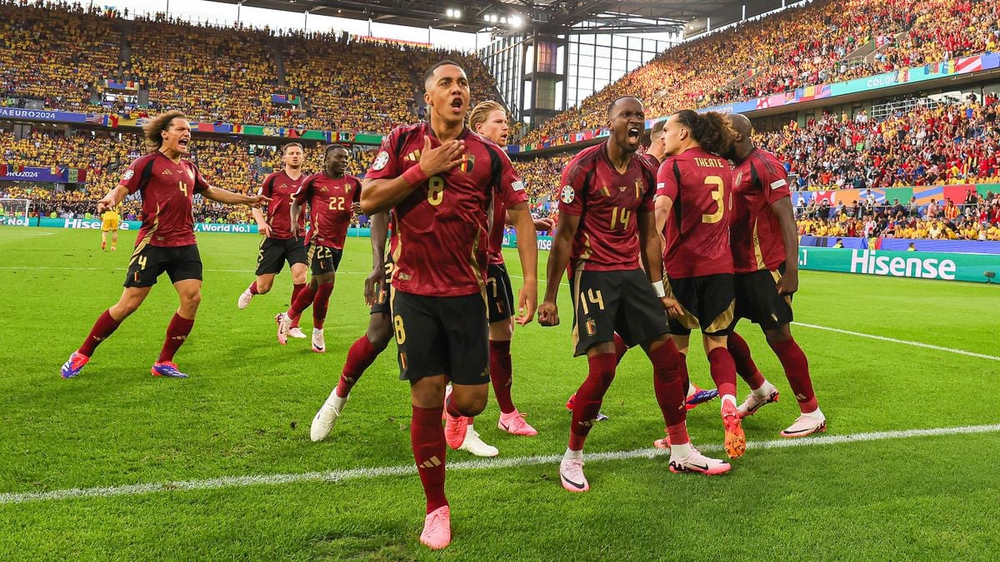

Het Wereldkampioenschap (WK) en het Europees Kampioenschap (EK) zijn de hoogtepunten van internationaal
voetbal, waarin landen strijden om de ultieme eer. Het WK, georganiseerd door de FIFA, brengt elke vier
jaar de beste teams van over de hele wereld samen, terwijl het EK, georganiseerd door de UEFA, de
Europese landen samenbrengt in een intens toernooi om de titel van Europees kampioen. De Nations League
is de nieuwste toevoeging aan de internationale toernooien, waarbij Europese landen op verschillende
niveaus tegen elkaar spelen in een uniek competitieformat. Samen bieden deze toernooien een podium voor
rivaliteit, passie en het beste van internationaal voetbal.

Kwalificeren
Nationale teams kwalificeren zich voor het WK via regionale kwalificatietoernooien, waarbij de beste
teams uit elke regio zich direct plaatsen voor het toernooi. Andere teams moeten via play-offs strijden
voor een plek in het eindtoernooi. Het EK heeft een vergelijkbare opzet, waarbij teams zich plaatsen via
groepsfasewedstrijden, met play-offs voor de teams die niet direct doorgaan. De Nations League is een
extra toernooi waarbij nationale teams worden ingedeeld in divisies en het kunnen opnemen tegen andere
teams binnen hun divisie. De prestaties in de Nations League kunnen de kwalificatie voor het WK of EK
beïnvloeden, doordat het ook play-offs voor deze toernooien biedt. Elk toernooi heeft zijn eigen
kwalificatiecriteria, waardoor elke campagne spannend is voor landen en hun fans.